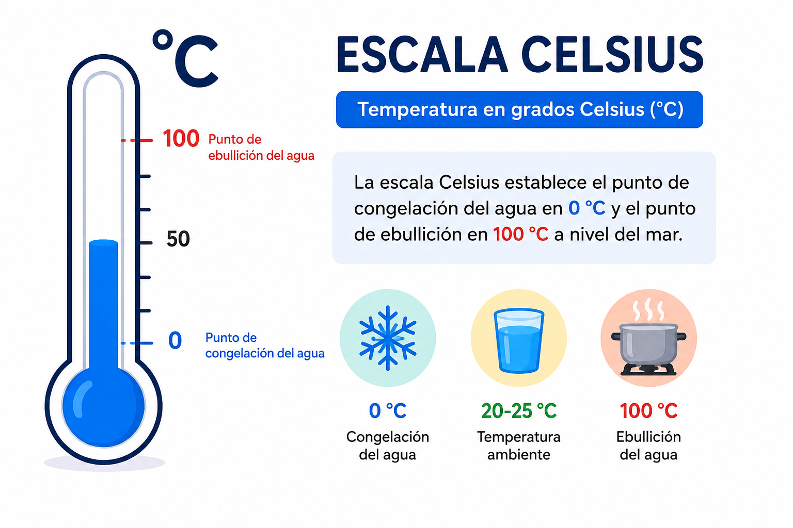
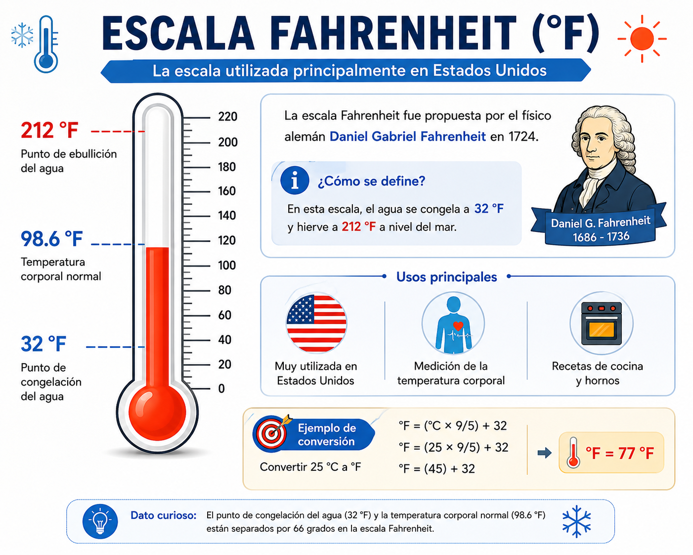
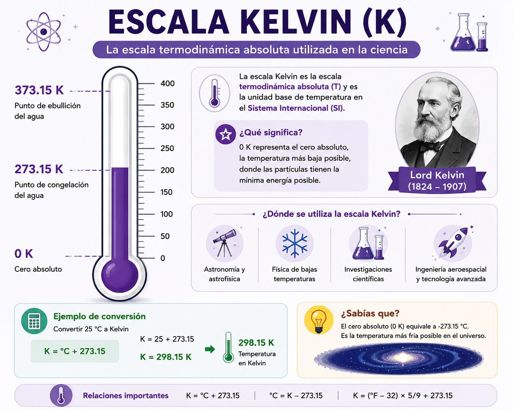

Introducción
La temperatura es una magnitud física utilizada para medir qué tan caliente o frío se encuentra un cuerpo o una sustancia. Existen diferentes escalas para representarla, siendo las más utilizadas Celsius (°C), Fahrenheit (°F) y Kelvin (K).
En este Objeto Virtual de Aprendizaje conocerás las características de cada una de estas escalas y aprenderás a convertir valores entre ellas mediante ejemplos y actividades interactivas.
Objetivos
- Comprender las escalas Celsius, Fahrenheit y Kelvin.
- Identificar las diferencias entre cada escala.
- Aplicar correctamente las fórmulas de conversión.
- Resolver ejercicios relacionados con cambios de temperatura.
Competencias a desarrollar
Aplicar conocimientos relacionados con las magnitudes físicas para resolver situaciones del contexto académico y productivo mediante conversiones entre diferentes escalas de temperatura.
Escalas de Temperatura

Escala Celsius
Es la escala más utilizada en la mayor parte del mundo. El agua se congela a 0°C y hierve a 100°C.
Anders Celsius creó esta escala en 1742.

Escala Fahrenheit
Es utilizada principalmente en Estados Unidos. El agua se congela a 32°F y hierve a 212°F.
Fue creada por Daniel Gabriel Fahrenheit.

Escala Kelvin
Es la escala utilizada por la comunidad científica.
El cero absoluto corresponde a 0 K.
Ejemplos de Conversión
Selecciona una conversión para ver cómo se realiza paso a paso.
Celsius → Fahrenheit
Ejemplo: Convertir 25 °C a Fahrenheit.
Fórmula:
°F = (°C × 9/5) + 32
(25 × 9/5) + 32 = 77 °F
Celsius → Kelvin
Ejemplo: Convertir 25 °C a Kelvin.
K = °C + 273.15
25 + 273.15 = 298.15 K
Fahrenheit → Celsius
Ejemplo: Convertir 77 °F a Celsius.
°C = (°F − 32) × 5/9
(77 − 32) × 5/9 = 25 °C
Kelvin → Celsius
Ejemplo: Convertir 298.15 K a Celsius.
°C = K − 273.15
298.15 − 273.15 = 25 °C
Actividad de Aprendizaje
Ingresa una temperatura, selecciona la escala de origen y observa cómo el termómetro responderá al valor ingresado.
Interpretación
🌡️ Termómetro
-- °C
Celsius
--Fahrenheit
--Kelvin
--Aplicaciones de las Escalas de Temperatura
Cada escala de temperatura tiene usos específicos dependiendo del área de aplicación. Conoce dónde se utiliza cada una.
Celsius
Es la escala utilizada en la mayoría de los países para medir la temperatura ambiental, el clima, procesos industriales y actividades cotidianas.
Fahrenheit
Es utilizada principalmente en Estados Unidos para informar la temperatura del clima, hornos domésticos y algunas aplicaciones comerciales.
Kelvin
Es la escala oficial del Sistema Internacional y se emplea en física, química, ingeniería e investigación científica.
Historia de las Escalas de Temperatura
A lo largo de la historia diferentes científicos desarrollaron escalas para medir la temperatura. Cada una respondió a las necesidades de su época y actualmente tienen aplicaciones específicas.
Ole Rømer
Desarrolló una de las primeras escalas modernas de temperatura, la cual sirvió como inspiración para Daniel Fahrenheit.
Daniel Fahrenheit
Publicó la escala Fahrenheit, utilizada actualmente en Estados Unidos y algunos territorios.
Anders Celsius
Propuso la escala Celsius, basada en el punto de congelación y ebullición del agua.
William Thomson (Lord Kelvin)
Introdujo la escala Kelvin tomando como referencia el cero absoluto, convirtiéndose en la unidad oficial del Sistema Internacional.
Calculadora de Conversión
Convierte temperaturas entre cualquier escala de forma rápida y sencilla.
Resultado
--Curiosidades sobre la Temperatura
Descubre algunos datos interesantes relacionados con las escalas de temperatura y fenómenos de nuestro planeta.
Temperatura más baja
La temperatura más baja registrada en la Tierra fue de aproximadamente -89.2 °C en la estación Vostok, ubicada en la Antártida.
Temperatura más alta
En el Valle de la Muerte (Estados Unidos) se registró una temperatura cercana a los 56.7 °C.
Superficie del Sol
La superficie del Sol alcanza aproximadamente los 5.500 °C, mientras que su núcleo supera los 15 millones de grados Celsius.
Cero absoluto
El cero absoluto corresponde a 0 Kelvin (-273.15 °C), donde el movimiento de las partículas alcanza su mínimo teórico.
Evaluación Final
Responde las siguientes preguntas para comprobar los conocimientos adquiridos.